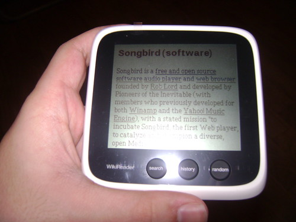
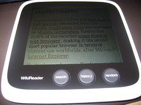
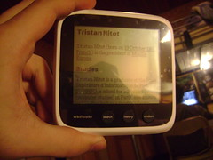
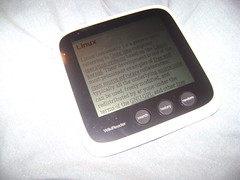
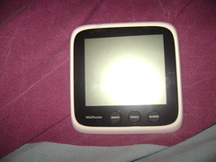
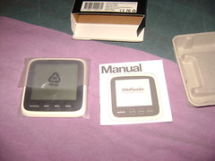

12 décembre 2009
Le WikiReader - 1ère partie : le test
Aujourd'hui, je teste pour vous le WikiReader !
 Le WikiReader est un appareil permettant de consulter les articles de Wikipédia conçu par la société OpenMoko (commercialisant déjà le Freerunner dont j'ai vaguement parlé précédemment dans mon bilan des RMLL).
Le principe est que tout les articles sont consultables sans avoir besoin d'Internet car tout est stocké dans une carte microSD à l'intérieur de l'appareil.
Trois boutons permettent d'interagir : Search, History et Random.
Le WikiReader est un appareil permettant de consulter les articles de Wikipédia conçu par la société OpenMoko (commercialisant déjà le Freerunner dont j'ai vaguement parlé précédemment dans mon bilan des RMLL).
Le principe est que tout les articles sont consultables sans avoir besoin d'Internet car tout est stocké dans une carte microSD à l'intérieur de l'appareil.
Trois boutons permettent d'interagir : Search, History et Random.
WikiReader ? Kézako ?
Le WikiReader est un appareil permettant de consulter les articles de Wikipédia conçu par la société OpenMoko (commercialisant déjà le Freerunner dont j'ai vaguement parlé précédemment dans mon bilan des RMLL).
Le principe est que tout les articles sont consultables sans avoir besoin d'Internet car tout est stocké dans une carte microSD à l'intérieur de l'appareil.
Trois boutons permettent d'interagir : Search, History et Random.

Search, vous l'aurez compris permet de faire une recherche. Grâce à l'écran tactile et au clavier virtuel vous pouvez facilement trouver l'article de votre choix. History, vous permet d'afficher les derniers articles consultés. Random, vous permet de consulter un article au hasard. Pour le moment, le WikiReader est uniquement disponible en anglais, comprenez qu'il n'y a que la version anglaise de Wikipédia intégré. Cependant nous allons bientôt fournir asthro d'OpenMoko-fr et moi même une version française (firmware + Wikipédia). Niveau consommation, le WikiReader consomme très peu : grâce aux 2 piles AAA fournies, la durée de vie est d'environ 12 mois !Que penser de cet appareil ?
Tout d'abord le WikiReader est très rapide et agréable d'utilisation. Il est pratique pour vérifier une information ou lire un article lors d'un déplacement alors que l'on ne dispose pas de connexion Internet. Le matériel utilisé est assez basique et je regrette qu'il n'y ai pas de rétro-éclairage (Impossible de lire un article dans l'obscurité). Le défilement pourrait aussi être amélioré : on ne peut pas encore défiler par palier et c'est pénible sur de long articles. D'autre utilisations pourraient venir compléter l'appareil comme par exemple la lecture de livres électroniques (ebooks), la prise de notes ou encore des petits jeux. Tout est possible ! L'intérêt est que le matériel et le logiciel du WikiReader sont Open Source !Wikipédia
C'est la version anglaise de base qui est intégré dans la carte microSD, soit plus de 3 millions d'articles. Il faut savoir que certains articles peuvent êtres filtrés avec un mot de passe pour les mineurs.Où l'acheter ?
Le WikiReader est disponible sur le site officiel au prix de 99$ soit 65,70 € et la transaction est gérée par Amazon.com. Attention cependant car la TVA et les frais de ports ne sont pas comptés. Au total il m'en à couté : 113,24 € (Frais de ports : 23,34 € et TVA : 24 €)Bilan
Points positifs :- Matériel et Logiciel Open Source
- Très réactif
- Design simple
- Pas de rétro éclairage
- Pas encore disponible en France donc frais de ports et taxes élevées
- Défilement qui pourrait être amélioré





Dans la 2ème partie, j'aborderais plus le coté technique et comment j'ai réalisé la traduction du firmware.
Commentaires 4